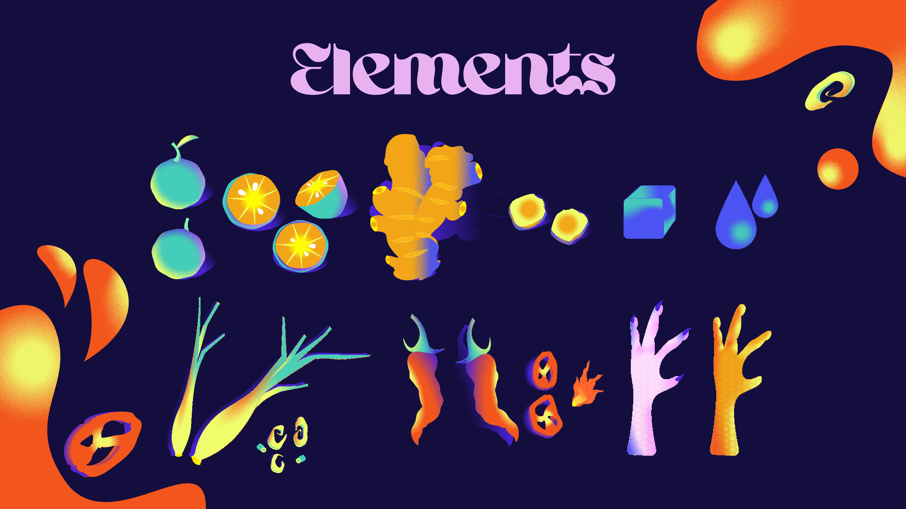
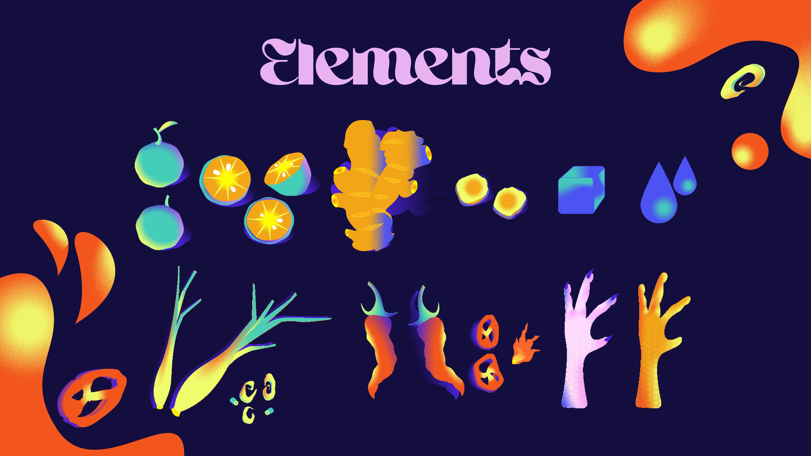
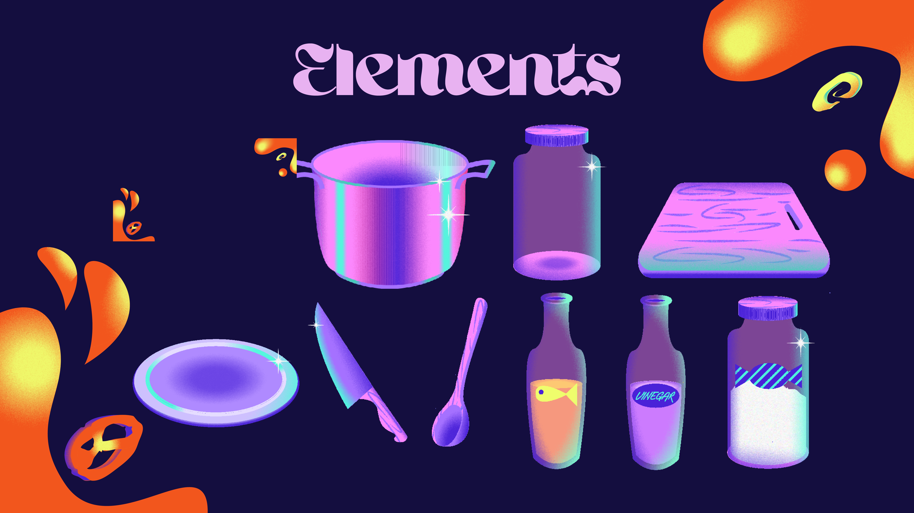
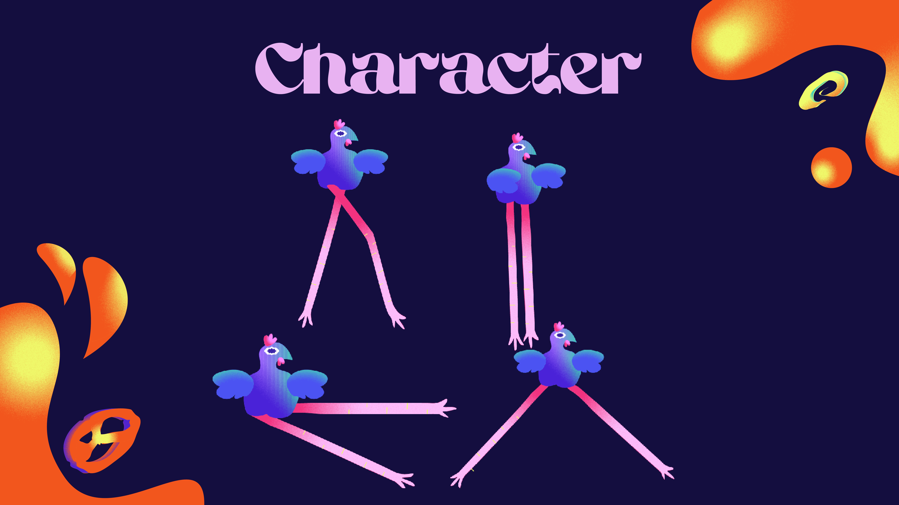
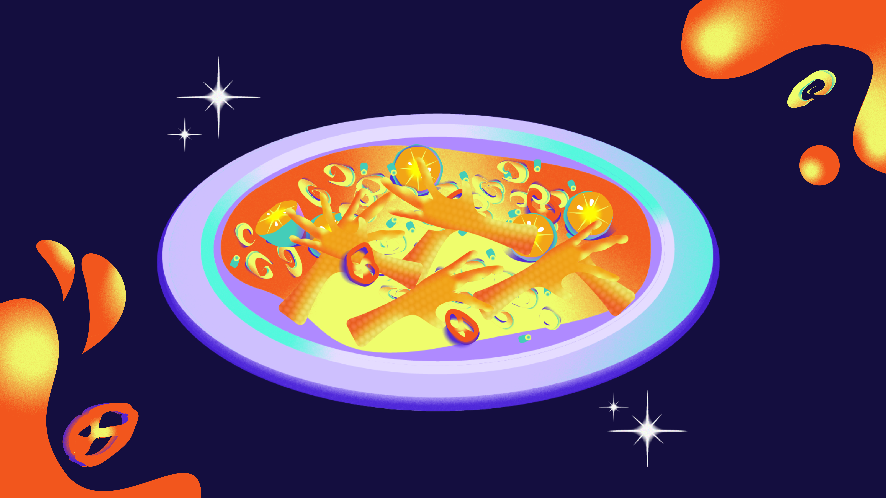
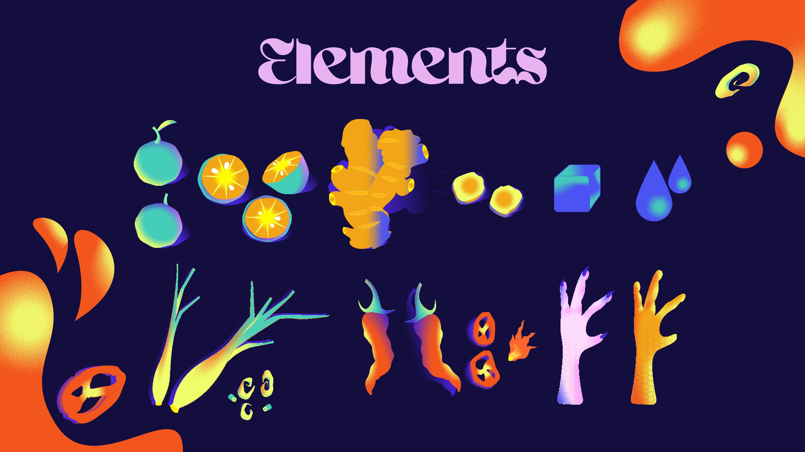

Chicken Feet
interactiveinfographic/figma/illustrator/food
If you're looking for a fun and interactive way to learn how to make a delicious Vietnamese snack, look no further than this "Chicken feet pickled with lemongrass and kumquat" interactive infographic!
This project features vibrant illustrations and engaging interactions, making it a great way to not only learn how to make this tasty dish, but also to have fun while doing so. Whether you're a seasoned cook or a beginner in the kitchen, this interactive infographic will guide you through the process step-by-step and help you create a snack that's loved by young people all over Vietnam.
